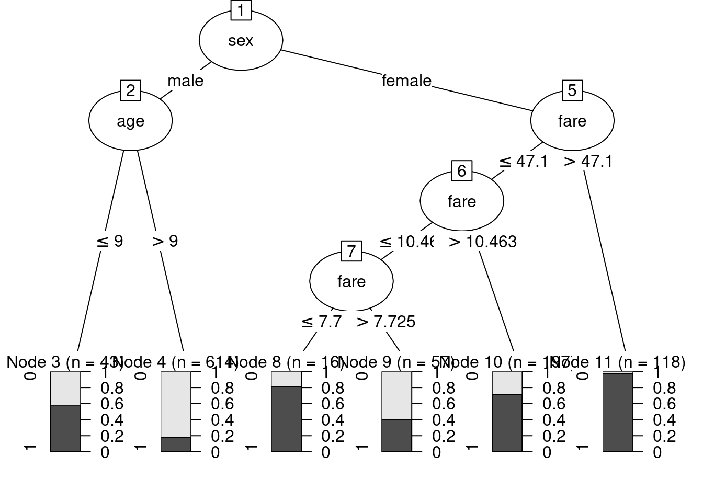
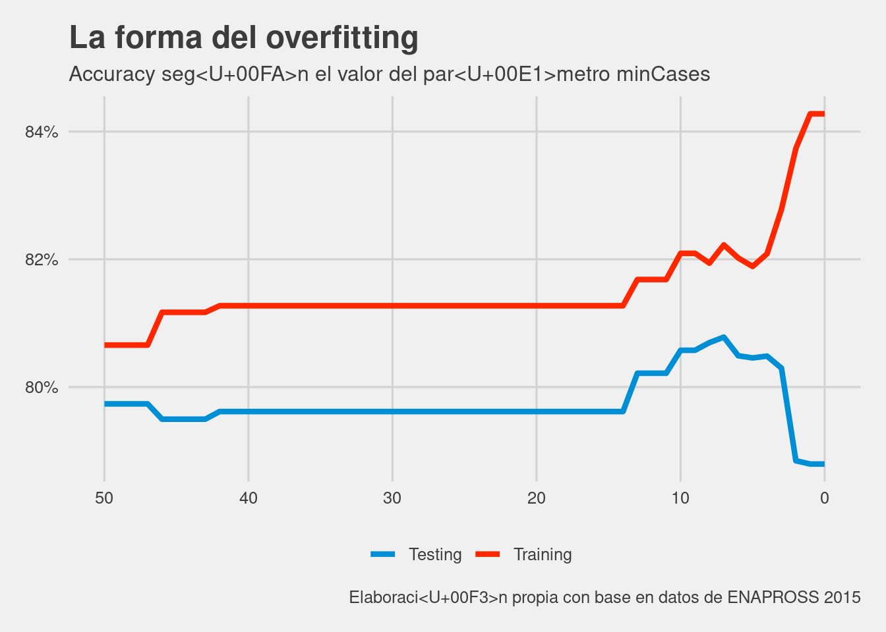
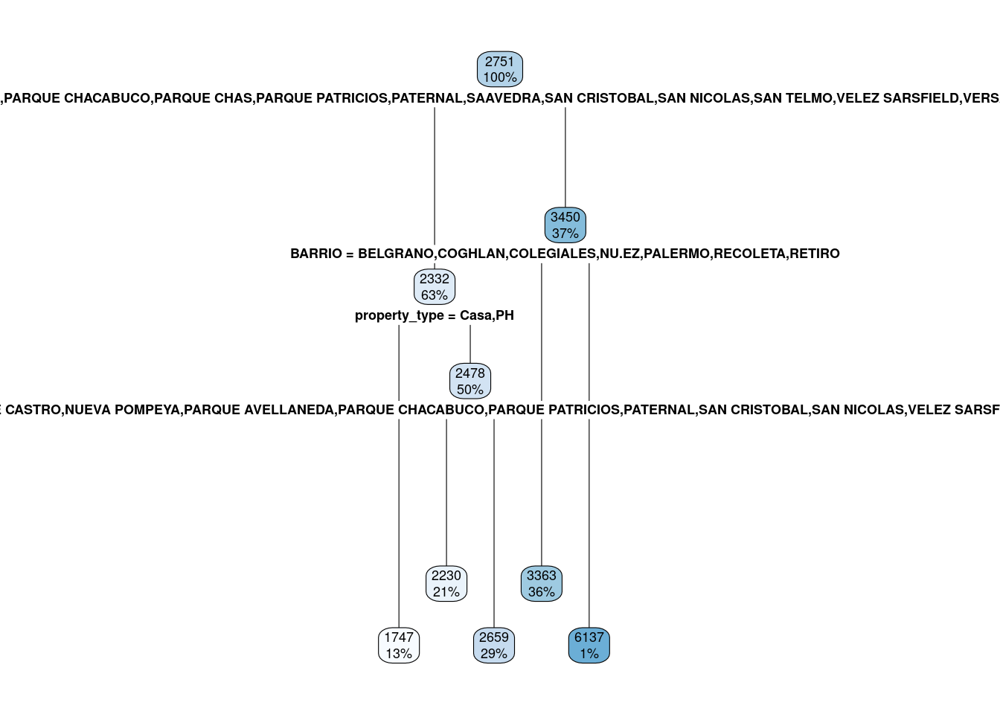

7 Los beatles del Machine Learning
Si la regresión lineal es el automóvil de la estadística o, como dice Walter Sosa Escudero, los “Rolling Stones” de esa disciplina científica, podríamos decir que los árboles de decisión, quizás la familia de técnicas de machine learning más famosa del mundo, son los Beatles del aprendizaje automático (traducción al español de *machine learning). En esta clase vamos a tener una introducción a qué hacen, cómo lo hacen y para qué sirven.
7.1 Machine Learning
El término Machine Learning debe ser uno de los más nombrados en los últimos años, junto a Inteligencia Artificial. Aunque no hay una clara definción de ambos conceptos, vamos a definir al segundo como “la habilidad de las maquinas de comportarse de una manera que nosotros consideramos inteligente”. Con respecto al primer concepto, mucho más estrecho, lo vamos a definir como “La capacidad de un programa de aprender a hacer una tarea cada vez mejor en base a la experiencia”, cerca de la definición del libro de Tom Mitchell, Machine Learning (2017). Notemos que el programa es quien aprende desde la experiencia: nosotros no intervenimos activamente en ese proceso de aprendizaje. Eso es lo que hace especial al Aprendizaje Automático (traducción de machine learning)
En términos de Mitchell, “Se dice que un programa de computadora aprende de la experiencia (E) con respecto a una determinada clase de tarea (T) y medida de performance (P) si su performance en la tarea (T), medido por P, mejora con la experiencia E”. En definitiva: Machine Learning es la posibilidad de un programa de computadora de hacer cada vez mejor su trabajo en base a una determinada métrica.
7.2 ¿Cómo funciona un árbol de decisión?
Si alguna vez jugaron al ¿Quién es Quién? conocen la principal característica de un árbol de decisión: hace preguntas que pueden ser respondidas con “si o no” (binarias) de tal manera de separar a todas las observaciones (en este caso, los nombres de los personajes) en base a las distintas variables que tienen (color de pelo, si usa o no anteojos, sexo, entre otras). De esta manera, tanto nuestra estrategia en el quién es quién como la de los árboles de decisión coinciden en dividir al espacio de nuestros datos en “segmentos” de acuerdo a los valores que toman en las distintas variables.

Lo que muestra el gráfico 1 es un árbol de decisión del Quién es Quién, suponiendo que el personaje que nos tocó es una mujer con anteojos (y hay solo una en todo el tablero). Esto que hacemos intuitivamente en jerga estadística se conoce como Recursive Partitioning.
Ahora bien, nuestro objetivo en el juego es identificar a la persona que nos tocó. Acá es donde comienzan las diferencias con respecto a los árboles de decisión. Por un lado, en el quién es quién nosotros, de manera activa, vamos haciendo las preguntas. Por otro lado, si aprendemos a jugar bien probablemente hagamos preguntas en las cuales la respuesta de sí o no nos elimine a la mayor cantidad de casos.
Pero un árbol de decisión no requiere nuestra intervención, de allí la parte de “automático” en aprendizaje automático: tiene reglas claras para ir haciendo las preguntas necesarias para hacer la tarea de “encontrar” a nuestro personaje cada vez mejor. Por otro lado, no le interesa conocer dónde está esa única persona, sino que el objetivo es aprender a clasificar cada vez mejor a cierta variable objetivo. Por ejemplo, imaginen que en lugar de encontrar a “Clara” el objetivo sea encontrar a “Mujeres”. Quizás en el Quién es Quién dentro de las personas que tienen pelo largo hay más mujeres que hombres y pueda usarse para eso.
De hecho, los árboles de decisión hacen exactamente esto último. Buscan ir segmentando el espacio de nuestras variables en distintos pedazos que logren aislar a las categorias de nuestra variable objetivo (lo que queremos predecir) de una manera más homogénea. En nuestro caso de crear un árbol para encontrar a las mujeres, desearíamos ir segmentando a las personas según preguntas cuya respuesta nos separe todos hombres o todas mujeres (o lo más cercano a eso). Veamos todo esto con un ejemplo cinematográfico.
7.3 ¿Podemos predecir quién se murió en el Titanic?
En abril de 1912 el RMS Titanic chocó contra un iceberg y más de 800 de los pasajeros murieron, mientras que aproximadamente 500 sobrevivieron ¿Podemos crear un árbol de decisión que nos permita predecir quienes sobrevivieron y quienes no en base a variables como su edad, género y clase en la que viajaron? Probemoslo con el conocido dataset que simula a los pasajeros del Titanic y las variables con las que vamos a entrenar a nuestro árbol de decisión.
titanic <- read.csv(file = "https://raw.githubusercontent.com/martintinch0/CienciaDeDatosParaCuriosos/master/data/titanic.csv",
stringsAsFactors = FALSE,
sep = ';')También vamos a cargar el paquete que nos va a permitir crear nuestro primer modelo de árboles de decisiones C50 (noten la C mayúscula en C50) y tidyverse:
Exploren un poco qué tiene el dataset de Titanic con el siguiente código:
## Rows: 1,045
## Columns: 4
## $ survived [3m[38;5;246m<int>[39m[23m 1, 1, 0, 0, 0, 1, 1, 0, 1, 0, 0, 1, 1, 1, 1, 0, 1, 1, 0, 1, 1, 1, 1, 1, 0, 1, 1, 1, 1, 0, ...
## $ age [3m[38;5;246m<dbl>[39m[23m 29.0000, 0.9167, 2.0000, 30.0000, 25.0000, 48.0000, 63.0000, 39.0000, 53.0000, 71.0000, 47...
## $ sex [3m[38;5;246m<chr>[39m[23m "female", "male", "female", "male", "female", "male", "female", "male", "female", "male", ...
## $ fare [3m[38;5;246m<dbl>[39m[23m 211.3375, 151.5500, 151.5500, 151.5500, 151.5500, 26.5500, 77.9583, 0.0000, 51.4792, 49.50...Las variables son bastante obvias, pero antes que tenemos que hacer un poco de data wrangling, en este caso bastante menor. El paquete C5.0 trabaja mejor con factores como predictoras (las que nos van a ayudar a predecir si una persona sobrevive o no al accidente del Titanic), pero también nos exige que este expresada en ese formato la variable objetivo (en nuestro caso, survived). Por esta razón vamos a convertir ambas variables:
Ya estamos en condiciones de entrenar nuestro primer árbol de decisión en R. La función que entrena al árbol se llama C5.0() y usa un sistema de fórmula muy similar al que se vio en el capítulo 4 cuando introdujimos a las regresiones:
Para ver qué tiene nuestro árbol, primero vamos a graficarlo. Esto lo podemos hacer con la función plot()

Un árbol de decisión está compuesto de nodos. Los que están al final, cuando no se hacen más bifurcaciones en nuestro dataset, se llaman hojas del árbol. Podemos ver que la primera pregunta que hace es si la persona es hombre o mujer. En caso que sea mujer, la siguiente pregunta es sobre distintos valores de la tarifa que se pagó. En caso que sea hombre, la pregunta tiene que ver con la edad.
Las hojas del gráfico están acompañadas de una barra que muestra la proporción que sobrevivió (gris oscuro) y la que no lo hizo (gris claro). Por ejemplo, podemos ver que la hoja donde se concentra la mayor proporción de sobrevivientes son las mujeres con una tarifa superior a USD 47.1, mientras que la mayor proporción de muertes se encuentran entre los hombres mayores a 9 años.
¿Cómo elige un árbol de decisión por cuál variable y por cuáles valores de esas variables abrir? elige aquellos cortes de nuestros datos que dejan más homogéneos a la nueva clasificación que la que había antes de hacer el quiebre. Para esto usa el importante concepto de entropia, la cual no desarrollaremos en profundidad pero basta con decir que es una medida que describe qué tan homogeneo es un conjunto de datos. Mientras más bajo sea más homogéneo es. Veamos cómo se calcula para el total de nuestros datos
proporcionSobrevivientes <- table(titanic$survived)[2]/nrow(titanic)
proporcionSobrevivientes # Aproximadamente un 41% de los pasajeros sobrevivieron## 1
## 0.4086124## [1] 0.9765005La entropía de nuestra base de datos es alta porque está muy cerca de estar distribuida como 50% y 50%, la situación más “heterogénea” que puede tener nuestra variable objetivo. De hecho, si se calcula la entropía de esa situación llegamos a lo siguiente:
## [1] 1¿Y si tenemos todo de una sola clase (por ejemplo, solo sobrevivientes)?
## [1] 1.993157e-05Bien, ahora veamos qué pasa con la entropia si abrimos, como hizo nuestro árbol, según el género. Para esto, tenemos que sumar las proporciones al final de cada hoja:
##
## female male
## 0 96 522
## 1 292 135Ahora podríamos calcular la entropía en cada una de las hojas del árbol. Vayamos primero con el de mujeres:
## [1] 0.8071676¿Y en los hombres?
## [1] 0.7327525Ahora debemos ponderar la entropía de la variable ponderando las dos hojas que abrió:
## [1] 0.7603822La apertura por género da una entropia de 0.76, mientras que aquella que no abre por nada tiene una de 0.9765 ¿Cómo medimos esta mejora? En lo que se conoce como Information Gain, que es tan solo la mejora en la entropia por abrir por una determinada variable con respecto a la entropía antes de abrir.
## [1] 0.2161178En el caso de Genero la mejora es de 0.216 y les garantizo que es la mayor de la apertura de todas las variables, ya que así trabaja C5.0
7.3.1 ¿Cómo podemos medir qué tan bien clasifica nuestro árbol?
Existen diversas maneras de medir la efectividad de la clasificación de un modelo de machine learning. Para este tipo de objetivo (clasificar) suele ser útil usar la matriz de confusión, que simplemente distribuye en celdas la clasificación de un determinado caso y el valor que tenía en nuestro dataset. Podemos acceder a ella mediante el método summary() aplicado a nuestro árbol
##
## Call:
## C5.0.formula(formula = survived ~ ., data = titanic)
##
##
## C5.0 [Release 2.07 GPL Edition] Tue May 12 12:30:17 2020
## -------------------------------
##
## Class specified by attribute `outcome'
##
## Read 1045 cases (4 attributes) from undefined.data
##
## Decision tree:
##
## sex = male:
## :...age <= 9: 1 (43/18)
## : age > 9: 0 (614/110)
## sex = female:
## :...fare > 47.1: 1 (118/3)
## fare <= 47.1:
## :...fare > 10.4625: 1 (197/56)
## fare <= 10.4625:
## :...fare <= 7.725: 1 (16/3)
## fare > 7.725: 0 (57/23)
##
##
## Evaluation on training data (1045 cases):
##
## Decision Tree
## ----------------
## Size Errors
##
## 6 213(20.4%) <<
##
##
## (a) (b) <-classified as
## ---- ----
## 538 80 (a): class 0
## 133 294 (b): class 1
##
##
## Attribute usage:
##
## 100.00% sex
## 62.87% age
## 37.13% fare
##
##
## Time: 0.0 secsYa nos dice que tiene una tasa de error de 20,4% ¿Cómo podemos ver esto en la tabla? si sumamos los falsos positivos y los falsos negativos, que están en las celdas de abajo a la izquierda y arriba a la derecha (133+80) y lo dividimos por todos los casos que clasificó.
¿Es esto mucho o poco? Para responder esta pregunta es siempre necesario pensar cómo se distribuía la variable en nuestro dataset. Ya sabemos que aproximadamente el 41% de las personas se salvó, por lo que si clasificaramos a todos como sobrevivientes, tendríamos una tasa de acierto del 41% y una tasa de error del 59%. Con nuestro árbol de decisión ahora tenemos una tasa de error de 20,4% (y de acierto de 79,6%)! Otra forma de pensar esto es mediante el lift que es la división entre la proporción de acierto en nuestro árbol y la del dataset original: 79.6/41= 1.94. Cualquier valor mayor a uno muestra que la tasa de acierto es mayor a la del denominador.
7.3.2 Un árbol puede reducirse a reglas
Una de las principales ventajas de los árboles de decisión de este estilo es que podemos reducir su complejidad a un conjunto de reglas que nos permite clasificar los casos. Para esto solo tenemos que cambiar un parámetro al entrenar el árbol de decisión
##
## Call:
## C5.0.formula(formula = survived ~ ., data = titanic, rules = TRUE)
##
##
## C5.0 [Release 2.07 GPL Edition] Tue May 12 12:30:17 2020
## -------------------------------
##
## Class specified by attribute `outcome'
##
## Read 1045 cases (4 attributes) from undefined.data
##
## Rules:
##
## Rule 1: (614/110, lift 1.4)
## age > 9
## sex = male
## -> class 0 [0.820]
##
## Rule 2: (246/54, lift 1.3)
## fare > 7.725
## fare <= 10.4625
## -> class 0 [0.778]
##
## Rule 3: (315/59, lift 2.0)
## sex = female
## fare > 10.4625
## -> class 1 [0.811]
##
## Rule 4: (16/3, lift 1.9)
## sex = female
## fare <= 7.725
## -> class 1 [0.778]
##
## Rule 5: (82/32, lift 1.5)
## age <= 9
## -> class 1 [0.607]
##
## Default class: 0
##
##
## Evaluation on training data (1045 cases):
##
## Rules
## ----------------
## No Errors
##
## 5 215(20.6%) <<
##
##
## (a) (b) <-classified as
## ---- ----
## 538 80 (a): class 0
## 135 292 (b): class 1
##
##
## Attribute usage:
##
## 90.43% sex
## 66.60% age
## 55.22% fare
##
##
## Time: 0.0 secsNo todos los modelos de Machine Learning tienen la posiblidad de mostrar de manera tan intuitiva las reglas para clasificar o predecir un determinado caso. Esta es una importante ventaja de los árboles de decisión. Algo importante a aclarar de estas reglas es que no son exactamente las mismas que las que componen el árbol y, además, un caso puede estar cubierto más de una vez por alguna de las reglas. Esto es porque al no estar “obligado” a mostrar bifurcaciones en el árbol de decisión, lo que entrega son reglas y, al clasificar, elige la que tiene mayor accuracy.
7.4 Aplicación en el mercado de trabajo: monotributistas y cuentapropistas informales
El sistema estadístico nacional tiene un serio problema para captar la naturaleza del trabajo independiente a lo largo del país. Una excepción a este problema generalizado fue la ENAPROSS del año 2015, en la cual se preguntó a los trabajadores independientes, entre otra cosas, si facturaban por su trabajo o no, es decir si eran monotributistas o no.
Podemos aprender de esta encuesta para luego predecir, en base a variables que sí están en otras encuestas, como la Encuesta Permanente de Hogares (EPH). Usemos lo que aprendimos sobre el algoritmo C5.0 y los árboles de decisión más en general.
load(file=url("https://github.com/martintinch0/CienciaDeDatosParaCuriosos/raw/master/data/independientes.RData"))
str(independientes)## 'data.frame': 2783 obs. of 6 variables:
## $ NIVEL_ED : Factor w/ 7 levels "Sin_instruccion",..: 3 4 4 4 3 5 2 3 4 4 ...
## $ REGISTRADO: Factor w/ 2 levels "No_registrado",..: 1 1 1 1 1 2 1 1 1 1 ...
## $ INGRESO : Factor w/ 10 levels "Decil1","Decil2",..: 1 10 1 3 7 7 1 8 5 7 ...
## $ EDAD : int 54 30 20 21 32 38 67 27 22 25 ...
## $ CAT_OCUP : Factor w/ 2 levels "Patron","Independiente": 2 2 2 2 2 2 2 2 2 2 ...
## $ REGION : Factor w/ 3 levels "CABA","CONURBANO",..: 1 1 1 1 1 1 1 1 1 1 ...El data frame independientes es una muestra de la ENAPROSS 2015, una encuesta a nivel nacional cuyo objetivo fue relevar ciertas características relacionados con la cobertura y calidad de la seguridad social en la Argentina y el empleo, entre otras condiciones sociales. Acá tenemos seis variables: el nivel educativo, si el trabajador independiente se encuentra registrado o no, el ingreso (según decil), la edad en años cumplidos, la categoría ocupacional (en este caso, si es independiente o patrón) y la Región del país, que en este caso queda segmentada entre CABA, CONURBANO y RESTO DEL PAÍS.
##
## Call:
## C5.0.formula(formula = REGISTRADO ~ ., data = independientes)
##
##
## C5.0 [Release 2.07 GPL Edition] Tue May 12 12:30:18 2020
## -------------------------------
##
## Class specified by attribute `outcome'
##
## Read 2783 cases (6 attributes) from undefined.data
##
## Decision tree:
##
## NIVEL_ED = Superior_completo: Registrado (235/38)
## NIVEL_ED in {Sin_instruccion,Primaria_incompleta,Primaria_completa,
## : Secundaria_incompleta,Secundaria_completa,Superior_incompleta}:
## :...INGRESO in {Decil1,Decil2,Decil3,Decil4,Decil5,Decil6,
## : Decil7}: No_registrado (1984/320)
## INGRESO in {Decil8,Decil9,Decil10}:
## :...NIVEL_ED = Sin_instruccion: Registrado (0)
## NIVEL_ED in {Secundaria_completa,Superior_incompleta}:
## :...CAT_OCUP = Patron: Registrado (68/7)
## : CAT_OCUP = Independiente:
## : :...EDAD <= 34: No_registrado (59/24)
## : EDAD > 34: Registrado (194/48)
## NIVEL_ED in {Primaria_incompleta,Primaria_completa,
## : Secundaria_incompleta}:
## :...INGRESO = Decil8: No_registrado (100/25)
## INGRESO in {Decil9,Decil10}:
## :...CAT_OCUP = Patron: Registrado (17/4)
## CAT_OCUP = Independiente:
## :...INGRESO = Decil9: No_registrado (80/32)
## INGRESO = Decil10: Registrado (46/18)
##
##
## Evaluation on training data (2783 cases):
##
## Decision Tree
## ----------------
## Size Errors
##
## 9 516(18.5%) <<
##
##
## (a) (b) <-classified as
## ---- ----
## 1822 115 (a): class No_registrado
## 401 445 (b): class Registrado
##
##
## Attribute usage:
##
## 100.00% NIVEL_ED
## 91.56% INGRESO
## 16.67% CAT_OCUP
## 9.09% EDAD
##
##
## Time: 0.0 secsSi les es más fácil para entenderlo, pueden plotearlo ¿Qué podemos decir del árbol que se creó? Enfoquémonos en Attribute usage: lo que hace es asignar la importancia de las variables según cuántos casos fueron clasificados usando a esa varaible. Por ejemplo, EDAD es usado en 253 (59+194) casos, que dividido por los 2783 casos que tenemos en este dataset dan 9,09%. De manera trivial, la primera de las variables es usada para clasificar todos los casos, por lo cual tiene 100% de importancia. Podríamos concluir que para nuestro modelo el nivel educativo y los ingresos son variables claves para asignar a un trabajador independiente como formal o no.
Por otro lado podemos ver que tiene una tasa de error de 18,5% ¿Es mucho o poco? De nuevo, averiguemos cuántos trabajadores no registrados hay en nuestro dataset:
##
## No_registrado Registrado
## 0.6960115 0.3039885El 69.6% de los trabajadores independientes en nuestro dataset no se encuentra registrado, con lo cual si dijeramos que todos los trabajadores independientes son no regisitrados nos equivocaríamos en 30,4%. Nuestro árbol de decisión llegó a reducirlo al 18,5%
Usemos nuestro modelo, ahora, para predecir nuestro dataset. La función predict hace exactamente esto:
independientes <- independientes %>%
mutate(PREDICCION = predict(primerArbol,
newdata = independientes %>% select(-REGISTRADO)))
table(independientes$REGISTRADO, independientes$PREDICCION)##
## No_registrado Registrado
## No_registrado 1822 115
## Registrado 401 445Esta es una tabla de confusión, como la que anteriormente vimos en el ejemplo del Titanic con summary(). Las filas indican la clasificación “real” de los casos, mientras que las columnas indican la que asignó nuestro modelo. La diagonal principal indica los casos correctamente clasificados, mientras que el que está arriba a la derecha nos marcan los falsos positivos, mientras que el elemento de abajo a la izquierda indica los falsos negativos. Si sumamos la diagonal (los correctamente clasificados) y lo dividimos por el total de casos obtenemos una importa medida de la performance de nuestro modelo: la accuracy
## [1] 81.45886La accuracy es solo una forma de medir la performance de nuestro modelo y nos va a servir en este tutorial para elegir entre modelos: el que tenga mayor accuracy es el que vamos a elegir. En este caso tenemos una accuracy de 81,5%, lo que implica que nuestro modelo tiene un lift de 81,5/69,6=1,18. Nuestro modelo es un 18% mejor que haber asignados a todos los casos con la proporción que conocemos de nuestra muestra.
7.4.1 Overfitting: aprendiendo demasiado de nuestra muestra
Si tienen que estudiar para un examen en algún momento de su formación es muy probable que lo hayan hecho a través de modelos de exámenes anteriores. El objetivo no es solo prácticar lo que vieron en el curso, sino aprender sobre cómo toma examen la docemente. En general, esto suele funcionar, pero tiene un límite al cual probablemente llegaron: si aprenden estrictamente a resolver los parciales que tuvieron como prueba es sumamente probable que solo sepan responder con eficiencia esos parciales pero no otros con pequeñas diferencias. Como los humanos, los algoritmos pueden caer en el problema de aprender demasiado las especificidades de una muestra.
El overfitting es uno de los principales problemas al entrenar un modelo de aprendizaje automático. Debemos garantizar que nuestro modelo NO funciona solo para la muestra, sino que los nuevos casos - los que queremos producir - también serán predichos de una manera razonable. De hecho, lo único que nos importa es la accuracy sobre una parte de la muestra que separamos y llamamos dataset de testing. Lo que pasa sobre nuestro dataset de training es secundario y solo lo utilizamos para detectar signos de overfiting.
Vamos a ver un caso en el que la mejora en la eficiencia en training no redunda en mejoras en testing, es decir un caso de overfitting. No se preocupen por el código, es un poco complejo pero más adelante vamos a usar a la librería caret para que haga todo este trabajo de una manera más eficiente que nosotros. El código lo que hace es ir realizando una grid search en alguno de los parámetros de nuestro modelo.
Los parámetros de los modelos definen, entre otras cosas, la estructura y la “velocidad” de aprendizaje del árbol, aunque siempre son específicas a los modelos. Una búsqueda en grid search (búsqueda en grilla) solo prueba un montón de valores para distintos parámetros y testea su accuracy. Una vez que se encuentra el valor máximo, esos serán los parámetros elegidos del modelo.
No se preocupen si les lleva un tiempo, es natural ya que está entrenando muchos modelos
# Eliminamos la variable que tiene la predección
independientes <- independientes %>% select(-PREDICCION)
set.seed(2)
# Creamos la "Grid Search" de dos parámetros
cfOpciones <- seq(0.8,1,0.01)
minCasesOpciones <- seq(0,50,1)
# Generamos los índices (números de filas) que van a ser de testing
indexTest <- sample.int(n = nrow(independientes),size = 0.3*nrow(independientes))
independientesTest <- independientes[indexTest, ]
independientesTraining <- independientes[-indexTest, ]
modelPerformance <- list()
for(cf in cfOpciones){
for(minCases in minCasesOpciones) {
# Para cambiar los parámetros presten atención a que debemos usar la función C5.0Control
model <- C5.0(REGISTRADO ~.,
data = independientesTraining,
control= C5.0Control(CF = cf,
minCases = minCases))
prediccionesTrain <- predict(model, independientesTraining)
trainAcc <- sum(prediccionesTrain==independientesTraining$REGISTRADO)/nrow(independientesTraining)
prediccionesTest <- predict(model, newdata = independientesTest)
testAcc <- sum(prediccionesTest==independientesTest$REGISTRADO)/nrow(independientesTest)
salida <- data.frame(cf, minCases,trainAcc,testAcc)
modelPerformance <- c(modelPerformance, list(salida))
}
}
modelPerformance <- plyr::rbind.fill(modelPerformance)Ahora veamos cómo fue la evolución de la accuracy tanto en training como testing (y de paso aprendemos un poco más sobre ggplot2)
modelPerformance <- modelPerformance %>%
group_by(minCases) %>%
summarise(Training = mean(trainAcc),
Testing = mean(testAcc)) %>%
gather(key = "dataset",value="acc",-minCases)
# Esta librería nos da la opción de agregar nuevos "temas" de ggplot
# que no vienen con la librería
library(ggthemes)
ggplot(modelPerformance) +
geom_line(aes(x = minCases,y = acc, color = dataset), size = 1.5) +
theme_fivethirtyeight() + scale_color_fivethirtyeight() +
scale_y_continuous(labels = scales::percent_format(accuracy = 1)) +
scale_x_reverse() +
labs(title = "La forma del overfitting",
subtitle = "Accuracy según el valor del parámetro minCases",
caption = "Elaboración propia con base en datos de ENAPROSS 2015") +
theme(legend.title = element_blank())
En el gráfico queda bastante claro como desde aproximadamente el valor minCases = 15 la accuracy en el dataset de testing crece sin parar pasando de aproximadamente 81% a 86%, mientras que la de testing tiene una leve tendencia a la caída. En este caso, estos parámetros no muestran un elevado overfitting. En otras situaciones, el overfitting puede ser tal que la accuracy sobre el dataset de testing caiga (y mucho) siempre hay que tenerlo en cuenta.
7.5 Algunos árboles no solo clasifican: árboles de regresión
Aunque suene contraintuitivo, algunos árboles de decisión pueden dividir el espacio de nuestras variables en base a valores no solo categóricos (como cuando clasificamos), sino en valores numéricos continuos. Aunque suene raro, veremos que lo que hace es relativamente fácil de comprender.
Para esto, vamos a trabajar con un dataset sobre el precio de los inmuebles en la Ciudad de Buenos Aires que descargué desde la división de datos de Properati. Pero para eso vamos a tener que hacer un Data Wrangling un poco más intenso.
7.5.1 Poniendo en forma los datos
Los datos que descargué pueden bajarlos ustedes, como siempre, con read.table():
avisosInmuebles <-read.table(file = url("https://github.com/martintinch0/CienciaDeDatosParaCuriosos/raw/master/data/datosProperati.csv"),
sep=';',header = TRUE,stringsAsFactors = FALSE)Tenemos unas cuantas variables, usemos glimpse() para ver cuáles son y su título:
## Rows: 62,009
## Columns: 12
## $ created_on [3m[38;5;246m<chr>[39m[23m "2019-02-23", "2019-02-23", "2019-02-23", "2019-02-23", "2019-02-23", "2019-02-23",...
## $ rooms [3m[38;5;246m<int>[39m[23m 3, 4, 1, 3, 4, 2, 5, NA, 1, NA, NA, NA, NA, NA, NA, NA, NA, 2, NA, NA, 1, 2, 1, 1, ...
## $ bathrooms [3m[38;5;246m<int>[39m[23m 1, 2, 1, 1, 2, 1, NA, NA, NA, NA, NA, NA, NA, NA, NA, NA, 1, NA, NA, 1, 1, 1, 1, 1,...
## $ surface_total [3m[38;5;246m<int>[39m[23m 62, 200, 28, 55, 200, 54, 113, 441, 1296, 13, 12, 10, 12, 12, 13, 12, 29, 39, 180, ...
## $ surface_covered [3m[38;5;246m<int>[39m[23m 62, 100, 28, 55, 100, 44, 88, NA, NA, 13, 12, NA, 12, 12, 13, 12, 29, 39, 180, 305,...
## $ price [3m[38;5;246m<int>[39m[23m 170000, 237000, 83000, 85000, 237000, 75000, 690000, 1100000, 40000, 16000, 22000, ...
## $ currency [3m[38;5;246m<chr>[39m[23m "USD", "USD", "USD", "USD", "USD", "USD", "USD", "USD", "USD", "USD", "USD", "USD",...
## $ title [3m[38;5;246m<chr>[39m[23m "PH - Almagro", "PH En Venta - Valez Sarsfield", "Monoambiente Caballito. Excelente...
## $ description [3m[38;5;246m<chr>[39m[23m "<br>Lind\355smo PH de 62 m2. Renovado. Sin Expensas. Apto Cr\351dito.<br><br>Lind\...
## $ property_type [3m[38;5;246m<chr>[39m[23m "PH", "PH", "PH", "PH", "PH", "Casa", "Casa", "Lote", "Lote", "Cochera", "Cochera",...
## $ operation_type [3m[38;5;246m<chr>[39m[23m "Venta", "Venta", "Venta", "Venta", "Venta", "Venta", "Venta", "Venta", "Venta", "V...
## $ BARRIO [3m[38;5;246m<chr>[39m[23m "ALMAGRO", "VELEZ SARSFIELD", "VILLA GRAL. MITRE", "MATADEROS", "VELEZ SARSFIELD", ...Los nombres de las variables parecen bastante descriptivos. Podemos ver, además, que nuestro data frame cuenta con información sobre diversos tipos de propiedades: nosotros queremos trabajar con inmuebles aptos para vivienda ya que son los únicos para los que aplican varias de las variables del dataset:
Además, con glimpse() pudimos ver que algunas de nuestras variables tienen datos faltantes: rooms, bathrooms y surface_covered. Veamos cuántos de cada uno
## [1] 3827## [1] 2088## [1] 1409La que parece tener más datos faltantes es rooms, hagamos un poco de data wrangling para poder completar estos casos en base al título o descripción del inmueble:
avisosInmuebles <- avisosInmuebles %>%
mutate(ambientes=str_extract(pattern = "(?i)\\d.amb", string= title)) %>%
mutate(ambientes=ifelse(is.na(ambientes),
str_extract(pattern = "(?i)\\d.amb", string=description), ambientes)) %>%
mutate(ambientes=as.numeric(str_extract(pattern='\\d',ambientes))) %>%
mutate(ambientes=ifelse(ambientes == 0,NA,ambientes))¿Qué es lo que hicimos? Varias cosas, pero vayamos por partes. En primer lugar, creamos una variable ambientes para la que usamos la función str_extract(), ya sea en title o description usando el pattern ‘(?i)\d.amb’ ¿Qué es lo que hace? (?i) dice que no le preste atención si una parte del texto está en mayúscula o minúscula (es decir, que haga una búsqueda que no sea case sensitive). Luego, \d.amb devuelve el primer dígito que encuentra a la izquierda de las palabras “amb” ¿Para qué hacemos esto? para que si un título dice “3 Ambientes”, levante el “3 Amb”, o si dice 2 AMB, que retenga todo.
Luego de que creamos esta variable, nos quedamos solo con el número aplicando str_extract(pattern=“\d”,…). Finalmente, si lo que devolvió de ambientes fue igual 0, entonces que le ponga NA porque eso no es un número válido de ambientes. Si se fijan cuántos datos faltantes tiene nuestra variable van a ver que son muchos (13.313, para ser exactos). Pero en el resto de los casos ¿cuántos coincide con la variable rooms, provista por Properati?
##
## FALSE TRUE
## 2853 32890No parece estar nada mal ! en 32890 de los 35743 casos donde coinciden arrojan la misma cantidad de ambientes. Vamos a completar la varaible rooms con estos datos:
avisosInmuebles <- avisosInmuebles %>%
mutate(rooms = ifelse(is.na(rooms), ambientes, rooms))
sum(is.na(avisosInmuebles$rooms))## [1] 1011Pueden replicar la misma idea para superficies cubierta o para los baños. Para lo que sigue de este capítulo podemos trabajar simplemente quedándonos con los casos completos de nuestro data frame, pero antes vamos a eliminar tambien algunas variables que no usaremos para la predicción:
avisosInmuebles <- avisosInmuebles %>%
select(-created_on,-currency,-title,-description,-operation_type,-ambientes) %>%
filter(complete.cases(.))Listo, ya estamos en condiciones de crear nuestro primer árbol de regresión, pero esta vez deberemos usar otra implementación de los árboles de regresión que nos brinda el paquete rpart()
Si prestaron atención, el último código de R usamos la función complete.cases() dentro del verb filter(). Pero cuando lo hicimos, dentro de la primera función usamos un punto ¿Qué representa ese punto en ese contexto? los datos hasta ese momento. Es decir, le estamos diciendo que aplique la función complete.cases() a todas las filas y las columnas que quedaron luego de select y que las filtre. Esta forma de usar funciones nos ahorra tener que asignar nuevamente los datos y encadenar todo en un mismo conjunto de pipes.
7.5.2 Recursive PARTitioning (RPART)
El paquete RPart nos brinda otra implementación de los árboles de decisión, una que nos permite trabajar con una variable numérica como variable a la que queremos predecir. Como siempre, debemos instalar nuestros paquetes antes de usarlos. Una vez que lo tengan instalado, solo tienen que cargarlo. Para hacer gráficos de rplot, van a tener que instalar otro paquete: rpart.plot().
require(rpart)
require(rpart.plot)
avisosInmuebles <- avisosInmuebles %>%
mutate(USDm2=price/surface_total)
arbolRegresion <- rpart(formula = USDm2 ~ rooms + BARRIO + bathrooms + property_type,
data = avisosInmuebles,control = rpart.control(cp = 0.01))
rpart.plot(arbolRegresion)
En mi experiencia, la mejor forma de entender los árboles de RPart no son sus gráficos, sino usar rpart.rules(). Pero antes de hacer eso, usemos el gráfico para ver el primero de los valores, el que está en el primer nodo: dice 2751. Ahora saquemos el promedio de los precios de los inmuebles
## [1] 2751¡Coincide! Lo que nos muestra este árbol es, para cada nodo, el promedio de los precios de los inmuebles y la cantidad de casos cubiertos desde ahí en adelante. Sin embargo, las “reglas” por las que va a clasificar se encuentran solo en los nodos raíz de más bajo nivel, las que dicen 1747 (13%), 2230 (21%), 2659 (29%), 3363 (36%) y 6137 (1%).
Para ver mejor cuáles son las reglas ejecutemos la función rpart.rules()
La variable que más usó fue barrios, y solo usa la variable property_type para algunos subconjuntos de barrios. Este árbol dirá que el precio en dólares por metro cuadrado para Puerto Madero es de USD 6.137, por ejemplo. Ahora bien ¿Es el promedio observado?
## [1] 6137Sí, coincide. Y eso es exactamente lo que hace un árbol de regresión: elige cómo segmentar a las variables y a cada nodo le asigna como valor el promedio. Ahora bien, antes introdujimos la idea de entropía como guía para ir particionando nuestro espacio de varaibles, pero ¿Qué usó ahora?. La respuesta es el RMSE (Root Mean Squared Error), es decir el promedio de la raiz cuadrada de los errores de predicción. Para cada nodo de nuestro árbol, él se va a preguntar: ¿qué variables y qué valores de esas variables maximizan la caída en el RMSE? Y con ese principio en mente termina de cubrir todos los casos.
Veamos cuál es la caída en el RMSE entre asignar para cada uno de los inmuebles el valor del promedio de los inmuebles y cuánto cambia con la primera apertura, en la que usa la variable BARRIOS
prediccionInicial <- mean(avisosInmuebles$USDm2)
rmseInicial <- sqrt(mean((prediccionInicial-avisosInmuebles$USDm2)^2))
rmseInicial## [1] 1446.731Ahora veamos qué pasa con este error al abrir por la primera variable. No se ve del todo claro, pero en el gráfico y en las reglas podemos entender que el árbol pregunta de que barrio es y genera tres bifucarciones: 1) PUERTO MADERO, 2) BELGRANO, COUGHLAN, COLEGIALES, NUÑEZ, PALERMO, RECOLETA Y RETIRO, 3) Otros barrios. Veamos el RMSE de esta clasificacion
prediccionBarrios <- ifelse(avisosInmuebles$BARRIO == "PUERTO MADERO", 6137,
ifelse(avisosInmuebles$BARRIO %in% c("BELGRANO, COUGHLAN","COLEGIALES","NUÑEZ","PALERMO","RECOLETA","RETIRO"),3363,
2332))
rmseBarrios <- sqrt(mean((prediccionBarrios-avisosInmuebles$USDm2)^2))
rmseBarrios## [1] 1342.169## [1] -0.07227452Esa apertura generó una caída de aproximadamente 8% en el RMSE de las predicciones y, dado el algoritmo de generación del árbol y los párametros elegidos, es la apertura que más mejora este indicador.
7.6 Ejercicio
En base a lo aprendido en este capítulo, entrenar un árbol de decisión con el dataset de Titanic, pero esta vez separando entre training (70% del dataset) y testing (30%) del dataset. Además, prueben dos parámetros distintos (mincases 5 y mincases 100) y estimen la accuracy (o tasa de acierto) tanto en el dataset de training como testing ¿Con cuál de los dos modelos se quedarían para predecir quién sobrevivió o no en el Titanic? ¿Por qué?
7.7 Lecturas recomendadas
Para profundizar y/o reforzar algunos de los puntos de este capítulo recomiendo la lectura del Capítulo 8 de Introduction to Statistical Learning de James, Witten, Hastie y Tibsharani
Para un tratamiento de divulgación, didáctico y estimulante recomiendo nuevamente la lectura del libro de Walter Sosa Escudero linkeado al final del capítulo 4. Para una aproximación más teórica de Machine Learning recomiendo la lectura del libro de Thomas Mitchell: Machine Learning.